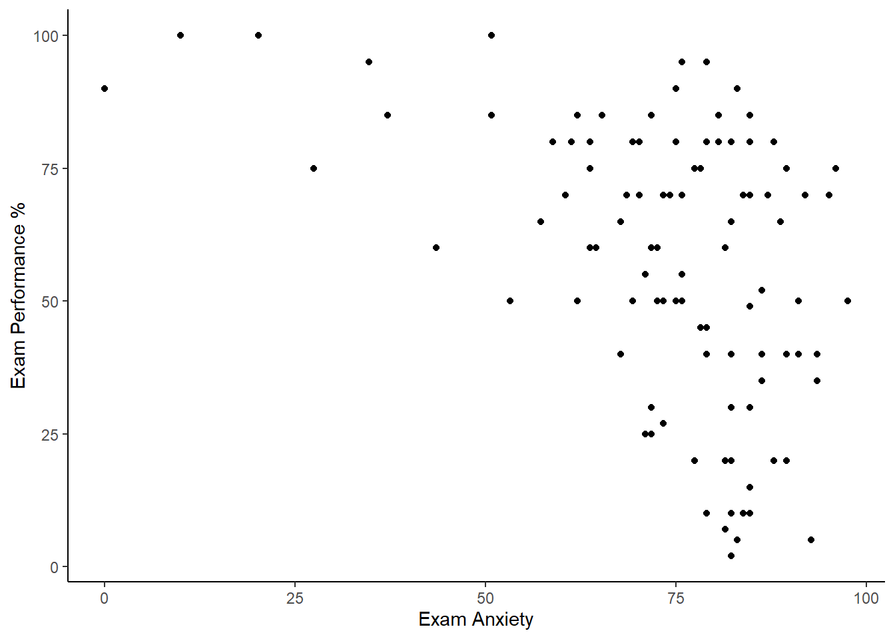
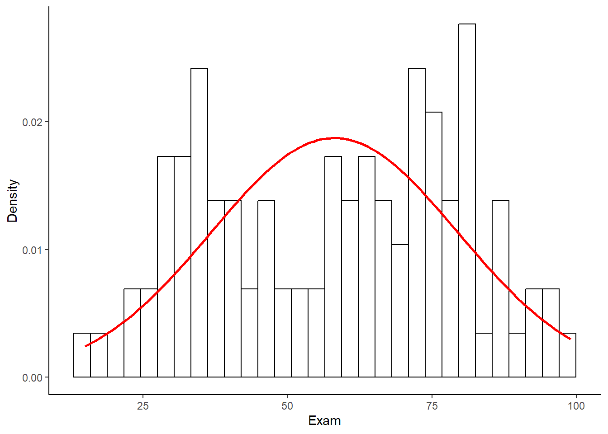
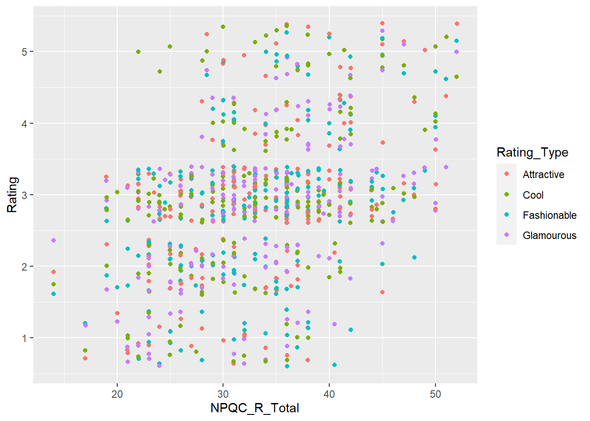
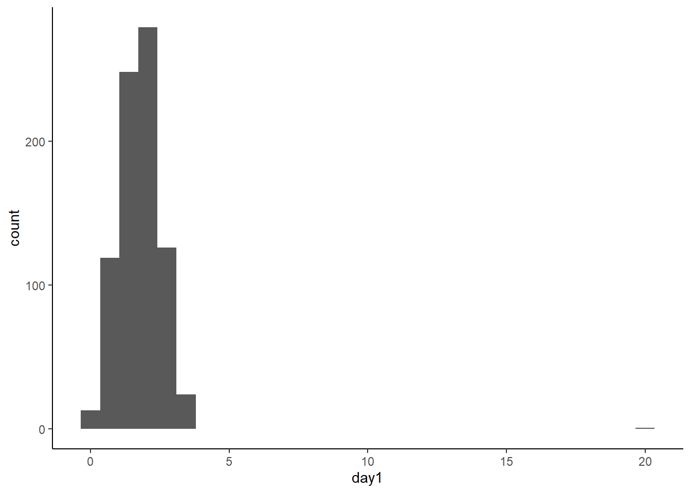
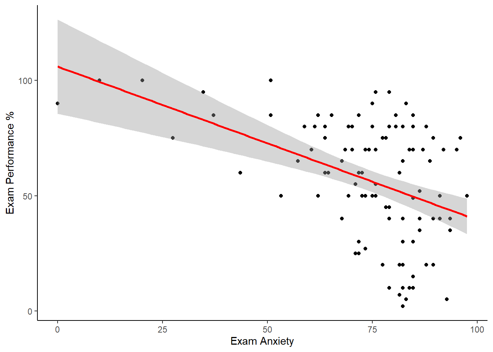
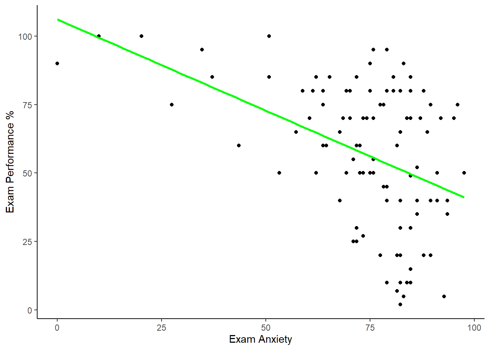
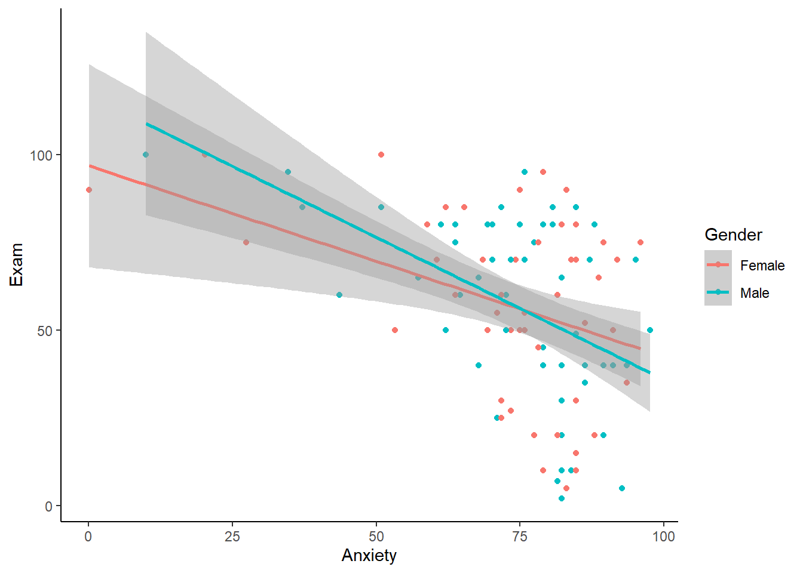
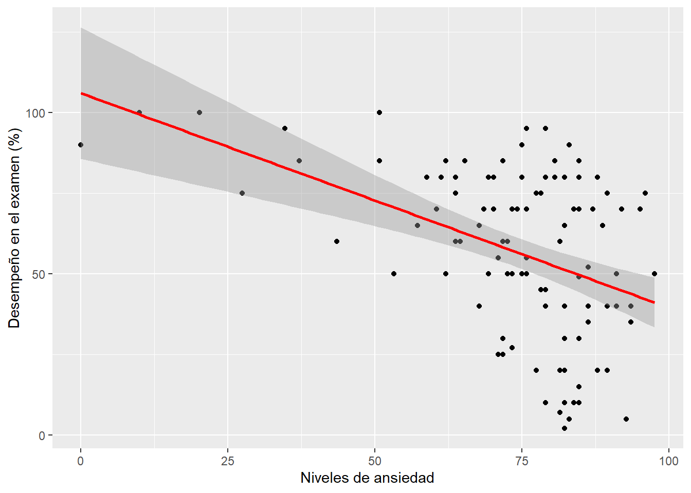
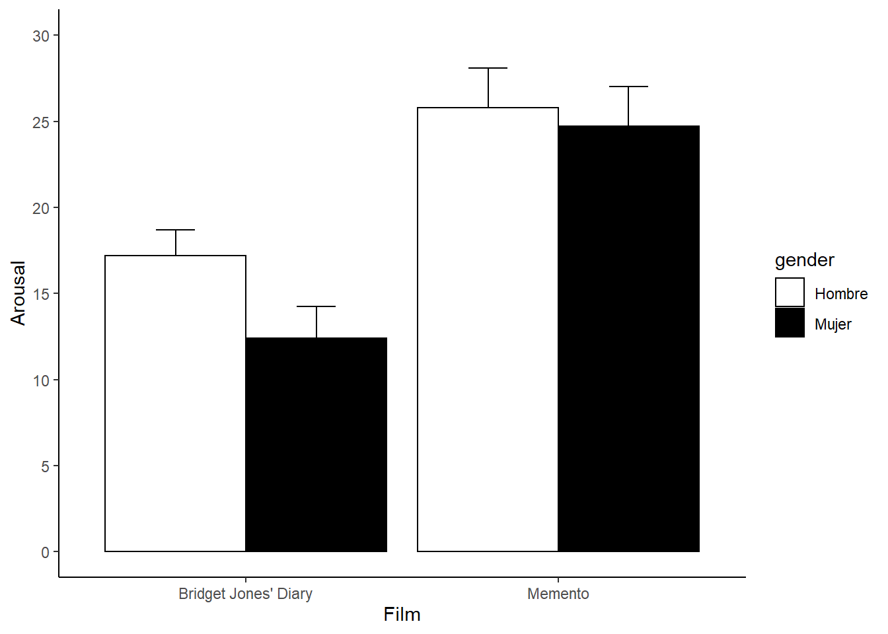
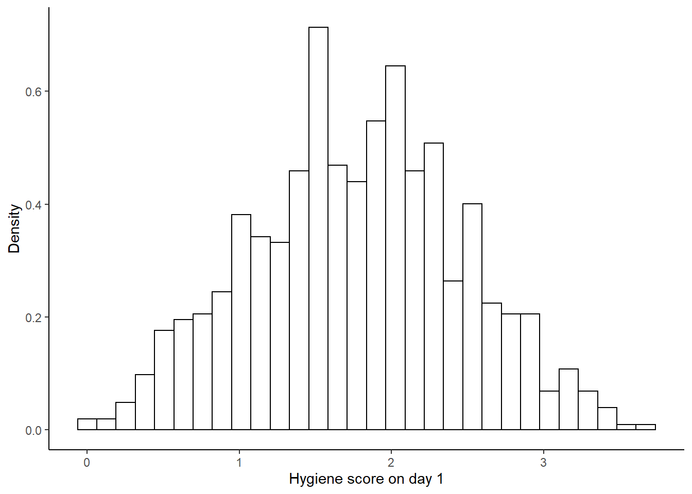

Capítulo 4 Gráficos
En este capítulo vamos a revisar algunos aspectos básicos para hacer gráficos en R.
4.1 ¿Cómo graficamos en R?
Revisa este video (16') y trata de responder:
- ¿Cómo se hace un buen gráfico?
- ¿Qué significa que se usen capas para hacer gráficos en R?
4.2 Gráfico de puntos
Primero seteamos nuestro directorio de trabajo.
Para graficar cargamos la librería ggplot2 (que tiene que haber sido previamente instalada). Al mismo tiempo se cargan otras librerías que nos serviran. Si no tienes estas librerías debes instalarlas. Finalmente importamos un set de datos y lo miramos.
setwd("C:/Users/Usuario/Documents/JoseLuis/UTalca_2018/Estadistica_Bookdown/estadistica")
library(ggplot2)
library(reshape)
library(plyr)
library(Rmisc)facebookData <- read.delim("data/FacebookNarcissism.dat", header = TRUE) # load data
head(facebookData)## id NPQC_R_Total Rating_Type Rating
## 1 1 31 Attractive 2
## 2 1 31 Fashionable 2
## 3 1 31 Glamourous 2
## 4 1 31 Cool 2
## 5 2 37 Attractive 2
## 6 2 37 Fashionable 2En este estudio se recolectaron una serie de datos de los participantes relacionados con rasgos de personalidad y niveles de narcisimo. id indica la identidad del participante. NPQC_R_Total indica la puntuación total en el cuestionario de narcisismo. Rating_Type una característica de personalidad y Rating indica la calificación (en una escala de 1 a 5) de esa característica de personalidad.
Ubcaremos NPQC_R_Total en el eje X y Rating en el eje Y. Acuérdate que para crear gráficos con ggplot debes crear un objeto dónde se encuentra la estructura base. Para visualizar el gráfico se debe invocar el objeto y al mismo debes agregar las distintas capas que constituyen el gráfico. Por ejemplo, un capa de puntos.
graph <- ggplot(facebookData, aes(NPQC_R_Total, Rating))
graph + geom_point()
Además, puedes ir agregando otras capas. Por ejemplo, el título.
graph <- ggplot(facebookData, aes(NPQC_R_Total, Rating))
graph + geom_point() + labs(title = "Figura 1")
Podemos cambiar los puntos por triángulos, usando el parámetro shape.
graph + geom_point(shape = 17)O podemos cambiar el tamaño de los puntos, usando el parámetro size.
graph + geom_point(size = 6)
También podemos colorear los puntos en función de los diferentes puntajes. Para ello debemos definir un color dentro del parámetro aes.
graph + geom_point(aes(colour = Rating_Type))
Por último, podríamos tener un problema de "sobreploteo", es decir, dado que hay un limitado número de respuestas que la personas podrían dar para valores equivalentes no se van a observar puntos diferentes. Para evitar esto podemos cambiar el parámetro position para agregar un retraso (o "jitter).
graph + geom_point(aes(colour = Rating_Type), position = "jitter")
4.3 Gráfico de dispersión
En un gráfico de dispersión se dibuja la puntuación de una una variable frente a la puntuación de otra variable.
En este ejemplo un psicólogo estaba interesado en entender los efectos que produce el estrés sobre el rendimiento en este examen. Se diseñó y se validó un cuestionario para evaluar el estado de ansiedad relacionado con los exámenes (llamado Cuestionario de Ansiedad ante los Exámenes, o EAQ). Esta escala produce un puntaje de ansiedad desd 1 a 100. La ansiedad se midió antes de un examen, y la calificación de cada estudiante en el examen se utilizó para medir el rendimiento del examen.
Primero, importemos los datos. No es necesario que carguemos la librerías si ya están cargadas.
examData <- read.delim("data/ExamAnxiety.dat", header = TRUE)
head(examData)## Code Revise Exam Anxiety Gender
## 1 1 4 40 86.298 Male
## 2 2 11 65 88.716 Female
## 3 3 27 80 70.178 Male
## 4 4 53 80 61.312 Male
## 5 5 4 40 89.522 Male
## 6 6 22 70 60.506 FemaleFíjate que en la data frame hay 5 variables: Code: Un número que indica la identidad del participante. Revise: El total de horas que los participantes dedicaron para estudiar. Exam: La nota en el examen que tuvo el participante (como porcentaje). Anxiety: La puntuación en la esclala de ansiedad. Gender: El género (masculino o femenino).
Primero, vamos a crear la estructura base del gráfico.
scatter <- ggplot(examData, aes(Anxiety, Exam))Fíjate que la estuctura base definimos que vamos a gráficar la relación entre la ansiedad (Anxiety) y las notas (Exam).
Luego, podemos ir agregando las capas. Por ejemplo, los puntos que relfejan cada participante y los títulos en los ejes.
scatter +
geom_point() +
labs(x = "Exam Anxiety", y = "Exam Performance %")
En general, en los gráficos de dispersión agregamos una línea de tendencia que resume la relación entre las variables. La sombra asociada a la línea representa un intervalo de confianza (CI) al 95%.
scatter +
geom_point() +
geom_smooth() +
labs(x = "Exam Anxiety", y = "Exam Performance %")## `geom_smooth()` using method = 'loess' and formula 'y ~ x'Pero, en general, se agrega una linea recta. Para ello usamos la función geom_smooth.
scatter +
geom_point() +
geom_smooth(method = "lm", colour = "Red") +
labs(x = "Exam Anxiety", y = "Exam Performance %")## `geom_smooth()` using formula 'y ~ x'Opcionalmente se puede omitir la sombra.
scatter +
geom_point() +
geom_smooth(method = "lm", colour = "Green", se = FALSE) +
labs(x = "Exam Anxiety", y = "Exam Performance %")## `geom_smooth()` using formula 'y ~ x'
Además, podemos cambiar la transparencia de la línea, cambiando el parámetro alpha. Y también podamos cambiar el relleno ("fill") de la sombra.
scatter +
geom_point() +
geom_smooth(method = "lm", alpha = 0.1, fill = "Blue") +
labs(x = "Exam Anxiety", y = "Exam Performance %")## `geom_smooth()` using formula 'y ~ x'
¿Qué pasa si queremos hacer gráficos de dispersión en función de más de una variable? Por ejemplo, podríamos querer ver las distintas relaciones entre ansiedad y puntajes en la prueba, en función del género (hombres versus mujeres). Para ello debemos re-definir la estructura base del gráfico, y debemmos agregar la variable género dentro del parámetro aes.
scatter <- ggplot(examData, aes(Anxiety, Exam, colour = Gender))Luego podemos hacer un nuevo gráfico.
scatter +
geom_point() +
geom_smooth(method = "lm")## `geom_smooth()` using formula 'y ~ x'
También podemos dibujar las líneas de acuerdo al género (y además podemos hacer las líneas transparentes). Para ello debemos definir un parámetro aes dentro de la función geom_smooth.
scatter +
geom_point() +
geom_smooth(method = "lm", alpha = 0.1, aes(fill = Gender)) +
labs(x = "Exam Anxiety", y = "Exam Performance %", colour = "Gender")## `geom_smooth()` using formula 'y ~ x'
4.4 Histograma
Un histograma es una representación gráfica de una variable en forma de barras, donde la superficie de cada barra es proporcional a la frecuencia de los valores representados.
En este ejemplo un biólogo estaba preocupado por los posibles efectos en la salud de los festivales de música. Un año fue al Download Music Festival y midió los niveles de higiene de 810 asistentes al concierto durante los tres días del festival. Dado que era difícil rastrear a todas las personas en esta base de datos faltaban algunos datos en los días 2 y 3. La higiene se midió utilizando una técnica estandarizada que da como resultado una puntuación que oscila entre 0 (hueles como un cadáver) y 4 (hueles a rosas dulces en un día fresco de primavera).
Primero, importemos los datos. No es necesario que carguemos la librerías si ya están cargadas.
festivalData <- read.delim("data/DownloadFestival.dat", header = TRUE)
head(festivalData)## ticknumb gender day1 day2 day3
## 1 2111 Male 2.64 1.35 1.61
## 2 2229 Female 0.97 1.41 0.29
## 3 2338 Male 0.84 NA NA
## 4 2384 Female 3.03 NA NA
## 5 2401 Female 0.88 0.08 NA
## 6 2405 Male 0.85 NA NAPrimero, vamos a crear la estructura base del gráfico.
festivalHistogram <- ggplot(festivalData, aes(day1))Y luego hacemos el gráfico.
festivalHistogram + geom_histogram()## `stat_bin()` using `bins = 30`. Pick better value with `binwidth`.
Por defecto se realizan los agrupamientos (o "bins) en grupos de 30 puntos. Hay varias cosas que podemos observar en este gráfico. Se observa inmediatamente que hay una valor mucho más alto que el resto de los valores. Podría ser un potencial outlier. También nos damos cuenta que podríamos usar una mejor definición de bins. Para ello podemos modificar el parámetro bindwith. Además, le podemos agregar unos títulos a los ejes.
festivalHistogram +
geom_histogram(binwidth = 0.4) +
labs(x = "Hygiene (Day 1 of Festival)", y = "Frequency")
Para lidiar con el outlier tenemos 2 opciones. Podemos eliminarlo de archivo original. O sea importamos un nuevo archivo.
# import data
festivalDataAlt <- read.delim("data/DownloadFestival_NoOutlier.dat", header = TRUE)
# define base graph
festivalHistogramAlt <- ggplot(festivalDataAlt, aes(day1))
# add layers
festivalHistogramAlt +
geom_histogram(binwidth = 0.6) +
labs(x = "Hygiene (Day 1 of Festival)", y = "Frequency")
Mejor aún. Como una segunda opción podemos ubicar el outlier en la data frame. Para ello usamos la función order para order los datos de menor a mayor. Luego usamos la función tail para ver los últimos puntos de los datos.
# import data
festivalData <- festivalData[order(festivalData$day1),]
tail(festivalData)## ticknumb gender day1 day2 day3
## 774 4564 Female 3.38 3.44 3.41
## 300 3371 Female 3.41 NA NA
## 657 4264 Male 3.44 NA NA
## 303 3374 Male 3.58 3.35 NA
## 574 4016 Female 3.69 NA NA
## 611 4158 Female 20.02 2.44 NAAquí nos fijamos que hay un valor exageradamente alto. Se escribe 20.02, y es probable que sea un error de registro. Lo que podemos hacer es eliminar manualmente el valor o modificarlo a 2.02.
festivalDataGood <- festivalData
festivalDataGood$day1[810] <- 2.02Y podemos re-hacer el gráfico.
festivalHistogramGood <- ggplot(festivalDataGood, aes(day1))
festivalHistogramGood +
geom_histogram(binwidth = 0.4) +
labs(x = "Hygiene (Day 1 of Festival)", y = "Frequency")
4.5 Boxplot
En un boxplot (o gráfico de cajas y bigotes) visualizamos la distribución y la asimetría en los datos mostrando los promedios y cuartiles (o percentiles) del set de datos. Vamos a usar los mismos que usamos antes. Veamos los datos originales, pero esta veámoslo en función del género. Debemos re-hacer la estructura base.
festivalBoxplot <- ggplot(festivalData, aes(gender, day1))
festivalBoxplot +
geom_boxplot() +
labs(x = "Gender", y = "Hygiene (Day 1 of Festival)")
En este tipo de gráfico también se puede visualizar el outlier. Ya habíamos lidiado con este problema transformando el valor del oulier. Podemos hacer un boxplot con la nueva data frame.
# define base graph
festivalBoxplotAlt <- ggplot(festivalDataAlt, aes(gender, day1))
# add layers
festivalBoxplotAlt +
geom_boxplot() +
labs(x = "Gender", y = "Hygiene (Day 1 of Festival)")
Por último, podemos hacer los boxplots para el día 2.
festivalBoxplot <- ggplot(festivalData, aes(gender, day2))
festivalBoxplot + geom_boxplot() + labs(x = "Gender", y = "Hygiene (Day 2 of Festival)")## Warning: Removed 546 rows containing non-finite values (stat_boxplot).
Y para el día 3.
festivalBoxplot <- ggplot(festivalData, aes(gender, day3))
festivalBoxplot + geom_boxplot() + labs(x = "Gender", y = "Hygiene (Day 3 of Festival)")## Warning: Removed 687 rows containing non-finite values (stat_boxplot).
4.6 Gráfico de barras
El gráfico de barras es el más común de las visualizaciones.
En este ejemplo un el director de una compañía cinematográfica estuvo interesado en saber si realmente existía el efecto llamado "chick flick", es decir, el hecho que hay películas que atraen más a las mujeres que a los hombres. Para investigar esta pregunta reclutó a 20 hombres y 20 mujeres y les mostró a la mitad de cada grupo una película que se suponía era para chicas ("El diario de Bridget Jones), y a la otra mitad de cada grupo una película que no caía en esta categoría de película (Memento). En todos los casos midió la excitación fisiológica (la conductancia de la piel) como indicador de cuánto disfrutaron la película los participantes.
Como siempre, primero importemos los datos. No es necesario que carguemos la librerías si ya están cargadas.
chickFlick <- read.csv("data/chick_flick.csv", header = TRUE)
head(chickFlick)## genero pelicula estado.de.alerta
## 1 Hombre Bridget Jones' Diary 22
## 2 Hombre Bridget Jones' Diary 13
## 3 Hombre Bridget Jones' Diary 16
## 4 Hombre Bridget Jones' Diary 10
## 5 Hombre Bridget Jones' Diary 18
## 6 Hombre Bridget Jones' Diary 24# cambiemos los nombres
colnames(chickFlick) <- c("gender", "film", "arousal")
head(chickFlick)## gender film arousal
## 1 Hombre Bridget Jones' Diary 22
## 2 Hombre Bridget Jones' Diary 13
## 3 Hombre Bridget Jones' Diary 16
## 4 Hombre Bridget Jones' Diary 10
## 5 Hombre Bridget Jones' Diary 18
## 6 Hombre Bridget Jones' Diary 24Fíjate que hay variables: gender: El género del participante. film: La película que estaba vió el participante. arousal: El nivel de excitación del participante.
Antes de crear la estructura base del gráfico vamos a hacer algunos cálculos. Para ello nos vamos a valer de algunas funciones estadísticas. La función summarySE nos permite calcular varias métricas estadísticas (N, promedio, SD, SE, CI) en función de otra variable. En este caso vamos a calcular el arousal promedio en función del tipo de film. Está función necesita de la librería Rmisc que ya está cargada.
dataSumm <- summarySE(chickFlick, measurevar="arousal", groupvars = c("film"))
dataSumm## film N arousal sd se ci
## 1 Bridget Jones' Diary 20 14.80 5.727128 1.280625 2.680379
## 2 Memento 20 25.25 7.129442 1.594192 3.336682Y luego hacemos el gráfico.
# usamos la tabla que recién creamos y graficamos el promedio del arousal (eje Y) en fución del film (eje X)
ggplot(dataSumm, aes(x=film, y=arousal)) +
# agregamos las barras dónde estan los promedios
# dodge permite crear un pequeño desfase entre la posición dónde se ubican los promedios
geom_bar(position = position_dodge(width = 0.9), stat="identity",
color="black", fill="green", show.legend=FALSE) +
# agregamos las barras de error
# dodge permite crear un pequeño desfase entre la posición dónde se ubican los promedios
# podemos modificar el ancho de las barras de error con "width"
# podemos definir los mínimos y máximos de las barras de error, tipicamente el error se muestra hacia arriba
geom_errorbar(position = position_dodge(width=0.9), width=0.25,
aes(ymin=arousal, ymax=arousal+se)) +
# creamos un fondo blanco para que se vea mejor
# se elimina la rejilla que aparece en el fondo
theme(panel.grid.major = element_blank(), panel.grid.minor = element_blank(),
panel.background = element_blank(), axis.line = element_line(colour = "black")) +
# podemos cambiar los límites y las separaciones del eje Y
scale_y_continuous(limits = c(0,30), breaks = seq(0, 30, 5)) +
# también podemos renombrar la etiqueta de los ejes
ylab("Arousal") +
xlab("Film")
Para entender mejor el rol de estos parámetros en la configuración del gráfico, cámbialos.
Además, podríamos querer visualizar los valores de excitación no sólo en función de las películas, sino que también en función del género.
Usamos la función summarySE para calcular el arousal promedio en función del tipo de film y del género.
dataSumm <- summarySE(chickFlick, measurevar="arousal", groupvars = c("film", "gender"))
dataSumm## film gender N arousal sd se ci
## 1 Bridget Jones' Diary Hombre 10 17.2 4.779586 1.511438 3.419110
## 2 Bridget Jones' Diary Mujer 10 12.4 5.796551 1.833030 4.146603
## 3 Memento Hombre 10 25.8 7.238784 2.289105 5.178314
## 4 Memento Mujer 10 24.7 7.364328 2.328805 5.268123Luego graficamos.
# Aquí debemos definir como ver el género dento del parámetro aes.
ggplot(dataSumm, aes(x=film, y=arousal, fill=gender)) +
geom_bar(position = position_dodge(width = 0.9), stat="identity",
color="black") +
geom_errorbar(position = position_dodge(width=0.9), width=0.25,
aes(ymin=arousal, ymax=arousal+se)) +
# podemos cambiar los colores de relleno
scale_fill_manual(values=c("white", "black")) +
theme(panel.grid.major = element_blank(), panel.grid.minor = element_blank(),
panel.background = element_blank(), axis.line = element_line(colour = "black")) +
scale_y_continuous(limits = c(0,30), breaks = seq(0, 30, 5)) +
ylab("Arousal") +
xlab("Film")4.7 Gráfico de líneas (1 factor)
El gráfico de líneas es también muy común para visualizar datos.
En este ejemplo se reclutaron 15 personas con hipo y durante un ataque de hipo se administraron tres procedimientos para detener el hipo (recibir un susto, ingerir un poco de azúcar y respirar en una bolsa) en orden aleatorio y a intervalos de 5 minutos. Además, se tomó una línea de base de cuántos hipo tuvieron por minuto. Durante al aplicación de los procedimientos para detener el hipo se contaron el numero de hipos por minuto.
Como siempre, primero importemos los datos.
hiccupsData <- read.csv("data/hipo.csv", header = TRUE)
head(hiccupsData)## ID Linea.base Susto Azucar Bolsa
## 1 1 15 9 7 2
## 2 2 13 18 7 4
## 3 3 9 17 5 4
## 4 4 7 15 10 5
## 5 5 11 18 7 4
## 6 6 14 8 10 3colnames(hiccupsData)[2] <- "Base"
head(hiccupsData)## ID Base Susto Azucar Bolsa
## 1 1 15 9 7 2
## 2 2 13 18 7 4
## 3 3 9 17 5 4
## 4 4 7 15 10 5
## 5 5 11 18 7 4
## 6 6 14 8 10 3Hay cuatro tratamientos: Base: el número de hipos sin ningún tratamiento. Susto: número de hipos al recibir un susto. Azucar: número de hipo al ingerir un poco de azúcar. Bolsa: número de hipos al respirar en una bolsa.
Cada fila en la base de datos representa a una persona diferente. Esto refleja un diseño de medidas repetidas. Cada columna representa una condición de tratamiento diferente. Y cada persona que se somete a cada uno de los tratamientos.
Antes de graficar con ggplot debemos cambiar el formato de la base de datos. El ID no nos interesa y nos podemos deshacer de él.
hiccupsData$ID <- NULL
hiccups <- stack(hiccupsData)
head(hiccups)## values ind
## 1 15 Base
## 2 13 Base
## 3 9 Base
## 4 7 Base
## 5 11 Base
## 6 14 Basecolnames(hiccups) <- c("Hipos","Tratamiento")
head(hiccups)## Hipos Tratamiento
## 1 15 Base
## 2 13 Base
## 3 9 Base
## 4 7 Base
## 5 11 Base
## 6 14 BasePara graficar una variable categórica en ggplot debemos transformarla a factor. A veces R automáticamente identifica esta variables como categóricas.
Además, podemos cambiar el orden en que aparecen las condiciones en el gráfico,
# Si una variable es categórica se puede ver hacia el final de los datos que existen niveles.
# En este caso la variable "Tratamieto" tiene 4 niveles.
hiccups$Tratamiento## [1] Base Base Base Base Base Base Base Base Base Base Base Base Base Base Base
## [16] Susto Susto Susto Susto Susto Susto Susto Susto Susto Susto Susto Susto Susto Susto Susto
## [31] Azucar Azucar Azucar Azucar Azucar Azucar Azucar Azucar Azucar Azucar Azucar Azucar Azucar Azucar Azucar
## [46] Bolsa Bolsa Bolsa Bolsa Bolsa Bolsa Bolsa Bolsa Bolsa Bolsa Bolsa Bolsa Bolsa Bolsa Bolsa
## Levels: Base Susto Azucar Bolsahiccups$Tratamiento2 <- factor(hiccups$Tratamiento,
levels(hiccups$Tratamiento)[c(1, 4, 2, 3)])
hiccups$Tratamiento2## [1] Base Base Base Base Base Base Base Base Base Base Base Base Base Base Base
## [16] Susto Susto Susto Susto Susto Susto Susto Susto Susto Susto Susto Susto Susto Susto Susto
## [31] Azucar Azucar Azucar Azucar Azucar Azucar Azucar Azucar Azucar Azucar Azucar Azucar Azucar Azucar Azucar
## [46] Bolsa Bolsa Bolsa Bolsa Bolsa Bolsa Bolsa Bolsa Bolsa Bolsa Bolsa Bolsa Bolsa Bolsa Bolsa
## Levels: Base Bolsa Susto AzucarUsamos la función summarySE para calcular el número de hipos promedio en función del tratamiento.
dataSumm <- summarySE(hiccups, measurevar="Hipos", groupvars="Tratamiento")
dataSumm## Tratamiento N Hipos sd se ci
## 1 Base 15 13.133333 4.8383390 1.2492537 2.6793828
## 2 Susto 15 12.800000 5.4142669 1.3979577 2.9983211
## 3 Azucar 15 8.733333 2.3441924 0.6052679 1.2981705
## 4 Bolsa 15 3.533333 0.8338094 0.2152887 0.4617482Luego graficamos.
# Para hacer un gráfico de línea debemos setear en el aes una estética de grupo igual a 1
# Esto nos permite agrupar puntos promedio dentro de un grupo en una línea
ggplot(dataSumm, aes(x=Tratamiento, y=Hipos, group=1)) +
# agregamos las barras de error
geom_errorbar(width=0.1, aes(ymin=Hipos-se, ymax=Hipos+se)) +
# agregamos las líneas que unen los puntos
geom_line(colour = "Red", linetype = "dashed") +
# agregamos los puntos que indican los promedios
geom_point() +
ylab("Número de hipos") +
# coord_cartesian(ylim = c(830, 900)) +
theme(panel.grid.major = element_blank(), panel.grid.minor = element_blank(),
panel.background = element_blank(), axis.line = element_line(colour = "black"))
4.8 Gráfico de líneas (2 factores)
Imagina que llevamos a cabo un experimento en el que a un grupo de 25 niños se les pidió enviar mensajes de texto vía sus teléfonos móviles durante un período de seis meses. A un segundo grupo de 25 niños se le prohibió enviar mensajes de texto por el mismo período. A estos dos grupos se les aplicó una pueba gramatical para medir el efecto de enviar mensajes de texto sobre su habilidades gramaticales.
La primera variable independiente fue el uso de mensajes de texto (uso de mensajes de texto versus controles) y la segunda variable independiente fue el tiempo (línea de base versus después de 6 meses).
Importemos los datos.
textData <- read.csv("data/usuarios_de_whatsapp.csv", header = TRUE)
head(textData)## Grupo Linea.base X6.meses
## 1 Usarios de Whatsapp 52 32
## 2 Usarios de Whatsapp 68 48
## 3 Usarios de Whatsapp 85 62
## 4 Usarios de Whatsapp 47 16
## 5 Usarios de Whatsapp 73 63
## 6 Usarios de Whatsapp 57 53# missing something!
colnames(textData) <- c("Group", "Baseline", "Six_months")
head(textData)## Group Baseline Six_months
## 1 Usarios de Whatsapp 52 32
## 2 Usarios de Whatsapp 68 48
## 3 Usarios de Whatsapp 85 62
## 4 Usarios de Whatsapp 47 16
## 5 Usarios de Whatsapp 73 63
## 6 Usarios de Whatsapp 57 53Hay 3 variables:
Grupo: especifica si estaban en el grupo de mensajes de texto o en el grupo de control. Baseline: puntajes de gramática en la línea de base. Six_months: puntajes de gramática después de 6 meses.
Cada fila en la base de datos representa a una persona diferente. Estos datos están nuevamente en el formato incorrecto para ggplot. En lugar del formato wide actual necesitamos los datos en formato long. Entonces necesitamos reestructurar los datos a una nueva data frame.
textMessages <- melt(textData,
id = c("Group"),
measured = c("Baseline", "Six_months"))
head(textMessages)## Group variable value
## 1 Usarios de Whatsapp Baseline 52
## 2 Usarios de Whatsapp Baseline 68
## 3 Usarios de Whatsapp Baseline 85
## 4 Usarios de Whatsapp Baseline 47
## 5 Usarios de Whatsapp Baseline 73
## 6 Usarios de Whatsapp Baseline 57colnames(textMessages)[c(2,3)] <- c("Time", "Grammar_Score")
head(textMessages)## Group Time Grammar_Score
## 1 Usarios de Whatsapp Baseline 52
## 2 Usarios de Whatsapp Baseline 68
## 3 Usarios de Whatsapp Baseline 85
## 4 Usarios de Whatsapp Baseline 47
## 5 Usarios de Whatsapp Baseline 73
## 6 Usarios de Whatsapp Baseline 57A esta altura podríamos querer cambiar los nombres de las condiciones. También podemos hacer eso.
head(textMessages)## Group Time Grammar_Score
## 1 Usarios de Whatsapp Baseline 52
## 2 Usarios de Whatsapp Baseline 68
## 3 Usarios de Whatsapp Baseline 85
## 4 Usarios de Whatsapp Baseline 47
## 5 Usarios de Whatsapp Baseline 73
## 6 Usarios de Whatsapp Baseline 57textMessages$Time <- factor(textMessages$Time, labels = c("Baseline", "6 Months"))
tail(textMessages)## Group Time Grammar_Score
## 95 Controles 6 Months 78
## 96 Controles 6 Months 62
## 97 Controles 6 Months 71
## 98 Controles 6 Months 55
## 99 Controles 6 Months 46
## 100 Controles 6 Months 79En esta base de datos tenemos las siguientes variables: Grupo: especifica si estaban en el grupo de mensajes de texto o en el grupo de control. Time: especifica si la puntuación se relaciona con la línea de base o después de 6 meses. Grammar_Score: especifica las puntuaciones de gramática.
Enseguida, Usamos la función summarySE para calcular los puntajes de grámatica promedio en función de la condición y el tiempo.
dataSumm <- summarySE(textMessages, measurevar="Grammar_Score", groupvars=c("Group", "Time"))
dataSumm## Group Time N Grammar_Score sd se ci
## 1 Controles Baseline 25 65.60 10.835897 2.167179 4.472839
## 2 Controles 6 Months 25 61.84 9.410455 1.882091 3.884445
## 3 Usarios de Whatsapp Baseline 25 64.84 10.679732 2.135946 4.408377
## 4 Usarios de Whatsapp 6 Months 25 52.96 16.331156 3.266231 6.741170Luego graficamos.
# En este caso debemos decirle a R que coloree las líneas en función de las condiciones experimentales.
ggplot(dataSumm, aes(x=Time, y=Grammar_Score, colour=Group)) +
# agregamos las barras de error
geom_errorbar(aes(ymin=Grammar_Score-se, ymax=Grammar_Score+se),
width=.1, position=position_dodge(0.1)) +
# agregamos las líneas que unen los puntos
geom_line(position=position_dodge(0.1),
aes(group=Group), show.legend=FALSE) +
# agregamos los puntos que indican los promedios
geom_point(position=position_dodge(0.1),
aes(group=Group), show.legend=FALSE) +
theme(panel.grid.major = element_blank(), panel.grid.minor = element_blank(),
panel.background = element_blank(), axis.line = element_line(colour = "black")) +
ylab("Mean Grammar Score") +
scale_colour_manual(values=c("red", "blue")) +
coord_cartesian(ylim = c(45, 70))